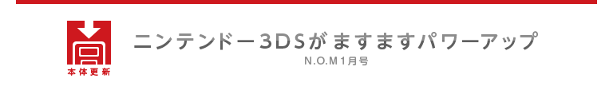
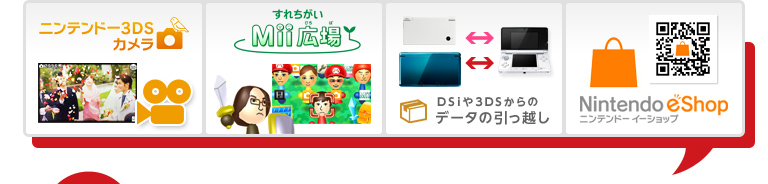
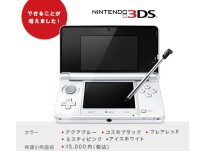

2011年12月7日、ニンテンドー3DSにさらなる新機能を追加する本体更新が始まりました。『インターネットブラウザー』や『ニンテンドーeショップ』が追加された6月の本体更新から半年がたち、今回もいくつかの新機能が追加されています。
まず、これまでの3D写真に加えて、3Dでの動画撮影が可能になりました。また、『すれちがいMii広場』に新しい要素が追加されて、遊びごたえがグッと増しています。そのほかにも、ニンテンドー3DS同士で大事なデータを引っ越せたり、『ニンテンドーeショップ』で注目作の体験版を無料ダウンロードできるようになっています。
今月のN.O.Mでは、この本体更新で新しくできるようになったことを、より細かく具体的にご紹介していきます。みなさんも本体更新を行って、ぜひニンテンドー3DSの新機能の数々を試してみてください。
ニンテンドー3DSの本体更新は、インターネットに接続する必要があります。ご自宅に接続環境がない場合でも、お近くの「ニンテンドーゾーン」や「ニンテンドー3DSステーション」で接続すれば、「本体設定」→「その他の設定」→「本体の更新」から行えます。なお、バージョンが「2.0.0-2J」以降の場合は、インターネット接続すると自動的に本体更新データがダウンロードされます。